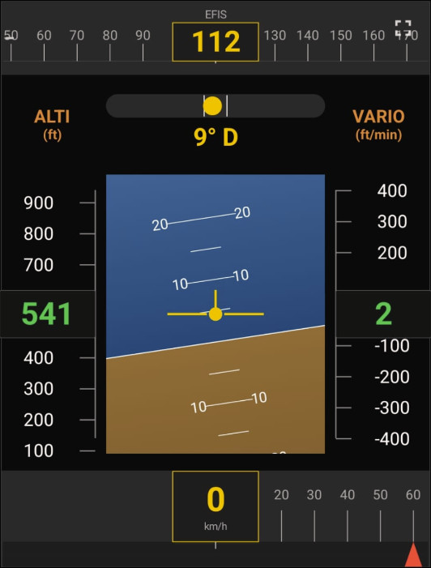

🧩
EFIS (bloc complet)
Bloc combiné : cap · bille · horizon · altitude · vario · vitesse
NUMEFS · numérique (100%-3L mini)

Possibilités
- Bloc combiné : bande de cap en haut, bille, horizon central.
- Échelles Altitude et Vario verticales.
- Bande de vitesse en bas avec arcs.
Gestes
– Appui long sur la bande de cap : saisir le cap à suivre
– Appui long sur la colonne Altitude : saisir l'altitude à suivre (curseur magenta sur l'échelle)
·· Double-tap : —